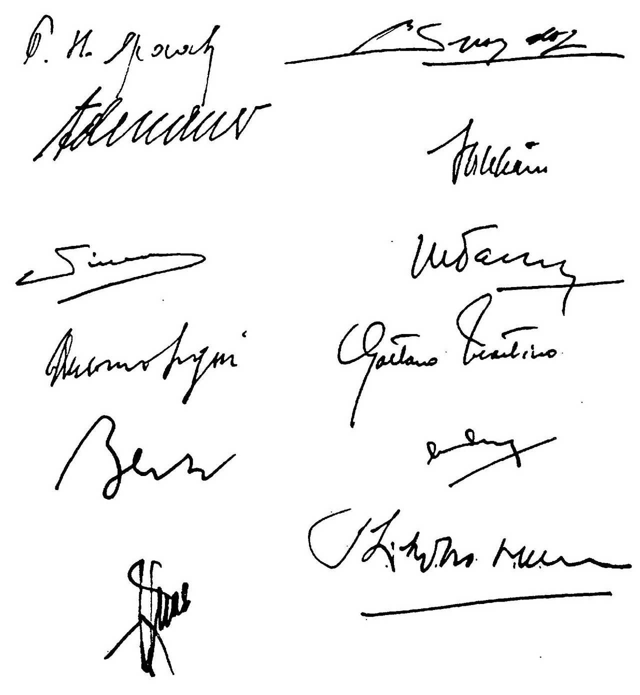
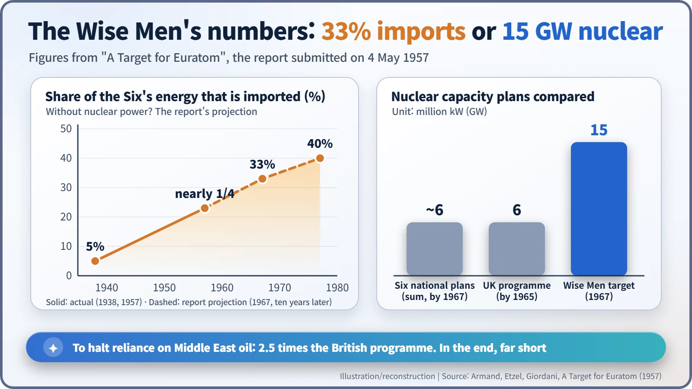
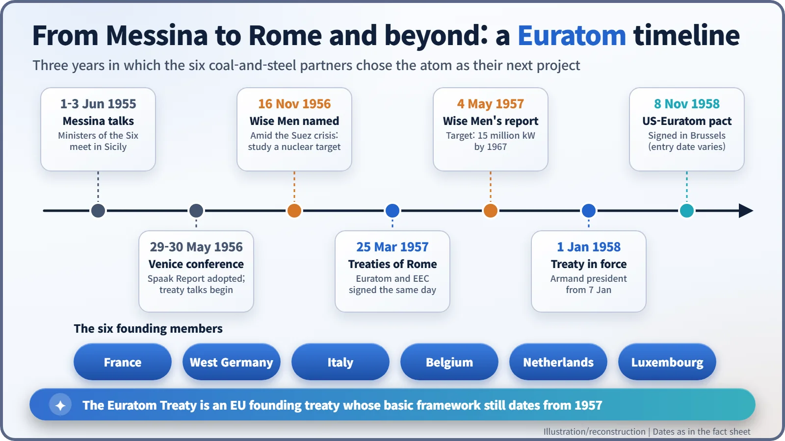

Nuclear History · 182
Twelve Signatures Around an Atom: The Birth of Euratom, the European Atomic Energy Community (1957)
After the Suez crisis, Europe's six founding states bet on a shared atom; the grand target was missed, but the institutions endured.
On 25 March 1957, in Rome, six coal-and-steel partners signed the Euratom Treaty alongside the EEC Treaty, betting that a shared nuclear industry would be the next step in European integration. Shaken by the Suez crisis, their "Three Wise Men" called for 15 million kW of nuclear capacity by 1967. That target was missed, but the safeguards, supply rules, radiation standards and joint research the treaty created are still in force.
Twelve signatures on one page
One sheet of paper, twelve signatures in two columns. At the top left is the hand of Belgium's foreign minister, Paul-Henri Spaak; below it, the heavy strokes of West German Chancellor Konrad Adenauer. France, Italy, Luxembourg and the Netherlands each sent two plenipotentiaries as well. This is the signature page of the Dutch-language copy of the Treaty establishing the European Atomic Energy Community, Euratom for short, signed in Rome on 25 March 1957. [2]

The Treaty establishing the European Economic Community (EEC) was signed the same day, so the "Treaties of Rome" are really two treaties. Today the EEC is the famous one, the seed of the European Union. In 1957, though, many people pinned bigger hopes on the atom.
Why the atom came after coal and steel
In 1951 six countries (France, West Germany, Italy, Belgium, the Netherlands and Luxembourg) had pooled the raw materials of war, coal and steel, in the European Coal and Steel Community (ECSC). To choose the next step, their foreign ministers met at Messina in Sicily on 1–3 June 1955. At a conference in Venice at the end of May 1956 they agreed to open treaty negotiations on two tracks: a common market and atomic energy.
The atom looked like a clean slate. None of the six yet had a large nuclear industry, so there seemed to be few vested interests to fight over, and catching up with the United States, Britain and the Soviet Union looked easier together than alone. Then, in autumn 1956, the Suez crisis closed the canal, and a Europe that ran increasingly on Middle Eastern oil suddenly worried about fuel.
The numbers of the "Three Wise Men"
On 16 November 1956 the six foreign ministers gave three men an assignment: report "on the amount of atomic energy which can be produced in the near future in the six countries, and the means to be employed for this purpose". They were Louis Armand (1905–1971), a French railway engineer; Franz Etzel (1902–1970) of West Germany; and the Italian chemist Francesco Giordani (1896–1961), the "Three Wise Men". A US State Department memo of 3 December 1956 described their task as a "crash program" of nuclear development. [1] [3]
Their report, A Target for Euratom, was submitted on 4 May 1957, after the treaty had already been signed. Its figures were blunt:
- The six countries "provide only 15 % of world energy production", even though they mined more coal than the whole world had in 1870.
- Energy imports, only 5% of their needs on the eve of the Second World War, were already "nearly a quarter", the equivalent of 100 million tons of coal, "most of which is oil from the Middle East".
- Without nuclear power, imports could reach 200 million tons (33% of requirements) in 1967 and perhaps 300 million tons (40%) ten years later. "The Suez Crisis has shown how precarious these supplies are."
Their answer was a target of 15 million kilowatts of nuclear capacity by 1967. Counting a large modern reactor as 1 million kW, that is roughly fifteen plants. The six countries' separate plans added up to only about 6 million kW by 1967, and Britain's programme aimed at 6 million kW by 1965, so the Wise Men were asking for two and a half times the British effort. [1]

What the treaty actually built
Article 1 set out the aim: "to contribute to the raising of the standard of living in Member States and to the development of commercial exchanges with other countries by the creation of conditions necessary for the speedy establishment and growth of nuclear industries." To get there, the treaty created several pieces of machinery. [2]
- A Supply Agency, with an option on ores and nuclear fuels and exclusive rights to conclude supply contracts, so that every user in the Community would be supplied regularly and fairly.
- Community ownership: Article 86 declared that "special fissionable materials shall be the property of the Community", so plutonium and enriched uranium formally belonged to Euratom.
- Safeguards: Euratom itself would check that nuclear materials were not diverted from their declared uses.
- Radiation protection: shared basic safety standards to protect workers and the public.
The treaty also provided for a joint research centre, whose first site became the research establishment at Ispra in northern Italy.
The treaty entered into force on 1 January 1958. On 7 January, Louis Armand, one of the three Wise Men, became the first president of the Euratom Commission. On 8 November 1958 an agreement for cooperation with the United States was signed in Brussels; sources differ on the date it entered into force. [4]
Did the knot hold?
The 15 million kW never arrived on time. As early as 1958 one of the report's authors admitted in an interview that the objective would "probably" not be attained. In the 1960s oil became cheap again, while nuclear plants cost more than expected. France went its own way through its national atomic energy commission (CEA), and West Germany showed more interest in working directly with the United States.
Historians are divided. One view holds that the supranational ambition, a single European nuclear industry, was broken early. Another points to the unglamorous institutions that still work: nuclear safeguards, radiation protection standards, joint research, and collaborations such as the JET fusion experiment built at Culham in England. Note that Euratom does not license nuclear power plants; that power remains with each country's own regulator.
The 1965 Merger Treaty combined the executives of the ECSC, the EEC and Euratom. Today all 27 EU member states belong to Euratom; the United Kingdom left it on 31 January 2020, together with the EU. Apart from technical amendments, the treaty's basic framework is still the one written in 1957. Twelve signatures did not bind Europe's atomic ambitions as tightly as their authors hoped, but they tied a knot that has lasted. [4]
